The COCOMO file types include: project file, model file, report file, calibration file, and comma separated values (csv) file. The first three are discussed here. The others are discussed in later chapters.
The project file in COCOMO stores a project’s data, which include project name, project scale factors, project schedule constraint, module name, SLOC, labor rate, effort adjustment factors (EAF), and COCOMO related calculation results. The COCOMO system gives all project files an ".est" extension.
Regarding the model file, as we mentioned in chapter one, COCOMO incorporates predictor factors, or cost driver attributes, which are grouped into four categories: software product attributes, platform attributes, personnel attributes, and project attributes. Each of these cost driver attributes determines a multiplying factor, which estimates the effect of the attribute in software development effort. There are also two user defined EAF factors plus the project-level required development schedule EAF factor. Besides these cost drivers, COCOMO also has scale factors. These multiplying factors and effort estimating equations constitute the model of a project. As we said previously, COCOMO has assigned default values and equations for the annually calibrated default model. Each time a COCOMO project is created, its effort estimate is based on the default parameter values. COCOMO provides flexibility in changing the values of multiplying factors, effort estimating equation, or schedule estimating equation. Adjusted parameter values are stored in the est file, but may also be saved in a model file. Upon saving this model file, these altered values can be applied to another project by loading the saved model file. The COCOMO system gives all model files a ".mod" extension.
The report file is a summary report of the COCOMO project. This report contains all entered and calculated values of a project. These files are given a ".rpt" extension.
The File menu option will enable you to create, retrieve, save, or print COCOMO files.
To select the File menu and its options, click on File with the mouse. The File menu will appear as Figure 2-1.
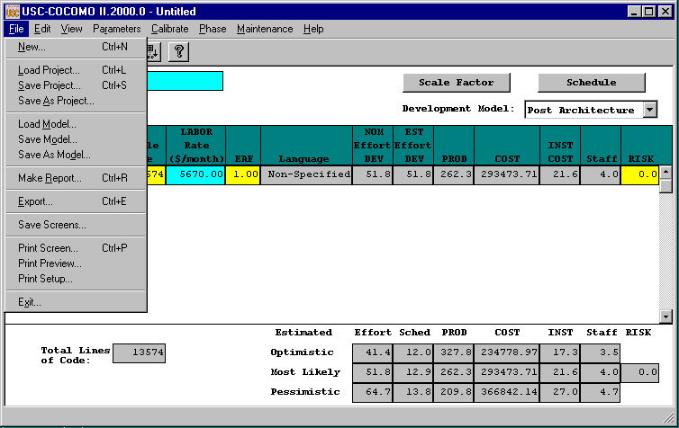
FIGURE 2-1 File Menu
The New option creates a new project file in the COCOMO working window, replacing any previous project file in the working window.
To Create a New Working File
1. Choose New from the File menu with mouse.
The working window will now be clear; the previous project file in the working window has been removed.
Note: New can be selected anytime; however, if the previous project file or model file has been modified, a warning dialog box will appear and requests confirmation. (as seen in Figure 2-2)
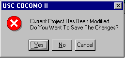
FIGURE 2-2 Warning Dialog Box
2. If the modifications on the previous file are not to be saved, choose Yes, otherwise choose No. If the No is selected, a Save File dialog will appear. (See Save Project and Save Model respectively)
To Retrieve or Load a Project File
1. Choose Load Project from the File menu with the mouse.
2. If a previous project file has been modified in the working window, the dialog box as in Figure 2-3 will appear.
FIGURE 2-3 Warning Dialog Box
3. If the previous project file is to be saved, choose Yes, then a Save File dialog box will appear. (See Save Project). If the modified file is not to be saved, choose No.
4. The Load Project dialog box will appear as seen in Figure 2-4.
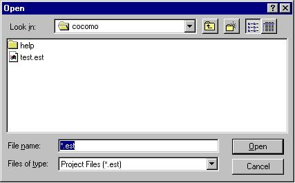
FIGURE 2-4 Load Project Dialog Box
The file name of a COCOMO project has a default format with ".est" as an extension. With this window, the desired project file can be selected from the Files scroll list for loading. If the desired project file does not exist in the scroll list, it is necessary to choose an appropriate directory.
5. Choose desired directory for file loading
6. When the desired file is shown on the Files list, click it, and click the "OK" button to initiate project loading.
7. After a project file is loaded, its file name will be displayed on the PROJECT FILE field at upper left corner on the working window, and all modules and related items will be displayed in the CLEF area. If the number of modules is beyond the window scope, the scroll bar can be used to look at all items.
The Save Project option is used to store the results of the current COCOMO project as a file with ".est" extension.
To Store the Results of Current Project
1. Choose Save Project from the File menu with the mouse. If the current project is loaded from a previously stored project file, the Save Project will overwrite the same project file with the current project.
2. If the current project is a new one, i.e., being created by the New command, the Project Save dialog box will appear, as seen in Figure 2-5.
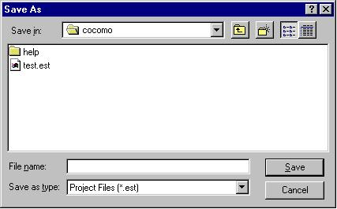
FIGURE 2-5 Save Project Dialog Box
3. Look at the Files scroll window. If the file saving is to update (overwrite) a existing project file, the desired filename should be found in the Files scroll list. If the filename can not be found from current list, change the directory from the Directories scroll list until the desired filename is being shown. When the desired filename is on the list, click it.
4. If the file saving is to store a new project file, choose the desired directory, then type in a new filename.
5. After the desired filename is selected or inputted, click the OK button to initiate project saving.
The Save As Project option is to store the current project as a COCOMO project file, which has a file name different from current file.
To Store Current Project With different File Name
1. Choose Save As Project from the File menu with the mouse.
2. The Save Project dialog box will appear, as seen in Figure 2-6.
FIGURE 2-6 Save Project Dialog Box
3. Look at the Files scroll window. If the file saving is to update (overwrite) a existing project file, the desired filename should be found in the Files scroll list. If the filename can not be found from current list, change the directory from the Directories scroll list until the desired filename is being shown. When the desired filename is on the list, click it.
4. If the file saving is to store a new project file, choose the desired directory, then type in a new filename in the SELECTION box.
5. After the desired filename is selected or inputted, click the OK button to initiate project saving. After a project file is saved, the project file name will be displayed on the PROJECT FILE field at the upper left corner of the working window.
The Load Model command is used when a specific model, in which the values of multiplying factors and scale factors are different from the COCOMO default model, is to be applied to the current project.
The Load Model option is used to retrieve a model file as well as loading it for the current project.
To Retrieve or Load a Model File
1. Choose Load Model from the File menu.
2. If a previous model has been modified in the current project, the following dialog box will appear.
FIGURE 2-7 Warning Dialog Box
3. If the previous model file is to be saved, choose Yes, then a Save Model dialog box will appear. (See Save Model). If the modified model is not to be saved, choose No.
4. The Load Model dialog box will appear as seen in Figure 2-8.
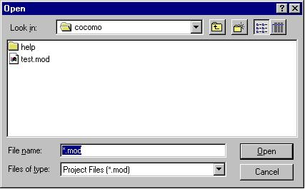
FIGURE 2-8 Load Model Dialog Box
The file name of a COCOMO model has a default format with ".mod" as an extension. With this window, the desired model file can be selected from the Files scroll list for loading. If the desired model file does not exist in the scroll list, look for it in the other directories.
5. Choose desired directory for file loading
6. When the desired file is shown on the Files list, click it, and click the "OK" button to initiate model loading.
7. After a model file is loaded, its file name will be displayed on the MODEL FILE field at upper left corner on the working window, and the related costs of current project will be recalculated and shown on the working window.
The Save Model option is used to store the results of the current COCOMO model as a file with ".mod" extension.
To Store the Results of Current Model
1. Choose Save Model from the File menu. If the current model is loaded from a previously stored model file, the Save Model will overwrite the same model file with the current model.
2. If the current model is a new one, the Save Model dialog box will appear, as seen in Figure 2-9.
FIGURE 2-9 Save Model Dialog Box
3. Look at the Files scroll window. If the file saving is to update (overwrite) a existing model file, the desired filename should be found in the Files scroll list. If the filename can not be found from current list, change the directory from the Directories scroll list until the desired filename is being shown. When the desired filename is on the list, click it.
4. If the file saving is to store a new model file, choose the desired directory, then type in the filename.
5. After the desired filename is selected or inputted, click the OK button to initiate model saving.
The Save As Model option is to store the current model as a COCOMO model file, which has a file name different from current model.
To Store Current Model With different File Name
1. Choose Save As Model from the File menu.
2. The Save Model dialog box will appear, as seen in Figure 2-10.
FIGURE 2-10 Save As Model Dialog Box
3. Look at the Files scroll window. If the file saving is to update (overwrite) a existing model file, the desired filename should be found in the Files scroll list. If the filename can not be found from current list, change the directory from the Directories scroll list until the desired filename is being shown. When the desired filename is on the list, click it.
4. If the file saving is to store a new model file, choose the desired directory, then type in the filename in the SELECTION box.
5. After the desired filename is selected or inputted, click the OK button to initiate model saving. After a model file is saved, the project file name will be displayed on the MODEL FILE field at the upper left corner of the working window.
The Make Report option creates a COCOMO report in the form of a text file for printing. In Post Architecture mode the text file contains ALL of the COCOMO parameter values and all of the input values. In Early Design mode only those parameters that affect Early Design are included.
To Create Project Report
1. Choose Make Report from the File menu.
2. The Make Report dialog box will appear, as seen in Figure 2-11.
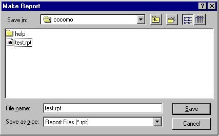
FIGURE 2-11 Make Report Dialog Box
3. Look at the Files scroll window. If the file saving is to update (overwrite) a existing report file, the desired filename should be found in the Files scroll list. If the filename can not be found from current list, change the directory from the Directories scroll list until the desired filename is shown. When the desired filename is on the list, click it.
4. If the file saving is to store a new report file, choose the desired directory, then type in the filename.
5. Choose desired directory for file saving: Look at the filter input box. The path found in this box represents the directory where the report file is going to be saved. This path will be changed after each directory change. To change the directory, click the appropriate directory choice from the Directories scroll list, then click the "Filter" button.
6. After the desired filename is selected or inputted, click the OK button to initiate report file saving.
7. To print a COCOMO project report, execute the local commands for your system in order to send the file for printing.
The Export option lets you select a directory to write files that can be imported into Excel. This option only works in Post Architecture mode, and only deals with the waterfall model and the corresponding phase distributions.
COCOMO Import & Analyze Tool is an Excel template which automates the process of importing the Comma Separated Values (CSV) files, produced by the COCOMO File | Export command. This command produces two sheets: Main, which contains Project and Module information, and Phases, which contains the phase distribution information. DO NOT rename those worksheets.
The template automates the process of generating charts which are useful for software project management. Though the template produces many useful charts, it is still possible to perform your own analysis of the COCOMO data. However to do that you must have a detailed knowledge of Excel and become familiar with the format of the csv files produced by COCOMO. Note that Excel does not permit you to open two workbooks with the same name, even if the workbooks are in different folders. To open the second workbook, you can either close the curren workbook, or rename it. However it is recommended that you do not rename cocomo.xls
Step 1: Start Excel and import the files generated by COCOMO
Click on Import COCOMO Files. The Browse For Folder dialog box will appear. Select the folder containing the Comma-Separated Values Files (CSV) generated by USC-COCOMO. If COCOMO Import&Analyze can find the files it is looking for (Main.csv and Phases.csv) it will open each file, read its contents and place it in the appropriate worksheet.
Step 2: Generate Charts
Once the sheets 'Main' and 'Phases' have been correctly initialized, you can generate meaningful analyses of the data, with the click of a button. Specific help on each chart is given below.
If the sheet corresponding to the chart you are trying to create has been already created, then the existing sheet will be activated, and get the input focus. If you want to overwrite the existing sheet, you will have to delete it by selecting the Delete Sheet command from the Edit menu.
Performing your own analyses
The charts that the COCOMO Import and Analyze tool can generate for you are just a subset of what you can do with the data imported into the 'Main' and 'Phases' sheets. COCOMO Import and Analyze Tool provides you with maximum flexibility by:
Copying the relevant parts of 'Main' and 'Phases' sheets into the sheet for the purpose of the generation of graphs; Using references to the values entered in 'Main' and 'Phases sheets, so that if you update the values in those sheets, the changes will be reflected in all the other 'calculated' sheets, as well as the charts. Note however, that if you introduce changes in any calculated sheet, the changes wont be carried over to Main or Phases; Allowing you to change some values. In particular, the sheets 'Project Cumulative Cost' and 'Project Cost per Phase' allow you to enter the Cost per Person-Month per Phase. The provided value is just an average computed from the COCOMO values. However you can use the value which reflects more accurately your organizational process.
If you click on the button marked Delete All Generated Sheets, and you select OK, all the 'calculated' sheets will be deleted. If you introduce changes to one of the 'calculated' sheets, and to prevent the sheet from being deleted, it is recommended that you rename the sheet.
The 'Menu' sheet is protected to avoid accidental displacement of the various buttons. It also disables resizing rows and columns, as well as selecting a range of cells. If you need to make changes to the 'Menu' sheet, toggle the 'Protect Sheet/Unprotect Sheet from the Protection command under the Tools menu.
Chart Explanations
Project Schedule per Phase
This chart is useful for determining the total calendar time required for the completion of the project.
COCOMO computes the schedule as the calendar time in months from the determination of a product's requirements baseline to the completion of an acceptance activity certifying that the product satisfies its requirements. Time spent in requirements is computed as an additional 20%.
Cost per Phase
This chart is useful for determining the cumulative cost as the project moves from one phase to another. It also displays the milestones between the phases (using the assumption of the Waterfall Model).
To obtain the Cost per Phase, given that the COCOMO computes only the Effort per Phase, it is necessary to compute the average Cost per Person-Month as Total Cost for entire project (excluding requirements) / Total Effort in Person-Months. Effort for requrements is assumed at an additional 7% of the Total Effort, and with the same Cost per Person-Month as the overall project. If your organization uses other Costs per Person-Month, you can use those values instead.
Cumulative Cost
This chart is useful for determining the cumulative cost of a project over time. It also displays the milestones between the phases (using the assumption of the Waterfall Model).
To obtain the Cost per Phase, given that the COCOMO computes only the Effort per Phase, it is necessary to compute the average Cost per Person-Month as Total Cost for entire project (excluding requirements) / Total Effort in Person-Months. Effort for requirements is assumed at an additional 7% of the Total Effort, and with the same Cost per Person-Month as the overall project. If your organization uses other Costs per Person-Month, you can use those values instead.
Cost per Module
This chart is useful for determining the cost of every module, and comparing which modules are accounting for the highest part of the cost. The cost of the entire project is the sum of the costs of the individual modules. Since these are only estimates, error bars are used to display the range within which the actual cost will fall, with a very high probability. COCOMO generates only the Optimistic (as 0.8xMost Likely) and the Pessimistic bound (as 1.25xMost Likely) for the cost of the entire project. The Optimistic/Pessimistic bounds on the cost estimates of the individual modules are similarly computed. This assumes that the error on the cost estimate for the entire project is the sum of the errors on the cost of the component modules. You can modify the Optimistic/Pessimistic bounds on the individual modules to match your organizational experience. The error bars will be adjusted accordingly.
Effort
Project Effort per Phase
This chart displays how the total effort for the overall project is distributed across phases.
The Effort percentages computed by COCOMO, that are displayed under 'Percentage' exclude the effort spent on requirements. However, the percentages displayed on the chart include the effort spent on Requirements, hence the slight difference.
Effort per Phase and Module
This chart displays the effort spent on every module, during the phases of the project. It can be used to quickly identify the modules which are the most effort-intensive. Effort for requirements is assumed at an additional 7% of the Total Effort.
Staffing
Project Personnel per Schedule This chart displays the staffing levels of the project over its duration. The cutoff points between the various phases are also clearly displayed. Staffing levels are assumed to remain constant during a given phase, and to experience a sharp increase/decrease at the beginning/end of a phase.
Project Personnel per Phase
This chart displays the staffing levels of the project during the various phases. Staffing levels are assumed to remain constant during a given phase, and to experience a sharp increase/decrease at the beginning/end of a phase.
Personnel per Module
This chart displays the staffing requirements for every module. It is useful for identifying the most labor intensive modules, and to appropriately plan for the staffing of teams which are typically responsible for modules within the project.
Activity
Project Activity per Phase This chart displays the effort spent by activity during the project lifetime. The activities correspond to the ones associated with a waterfall model.
The effort spent per activity is computed as a percentage from the total effort spent during a phase. Refer to the EFFORT (%) section of the 'Phases' sheet to view the percentages used. The same percentages are used for the overall project,
and for the individual modules. If you think from your organizational experience that some modules may require different activity distribution than others you can recompute the effort spent by activity for those modules.
Project Personnel per Activity and Phase
This chart displays the personnel required for every activity during each phase of the project. The activities correspond to the ones associated with a waterfall model.
The personnel required for every activity is computed from the effort spent per activity. The effort spent per activity is computed as a percentage from the total effort spent during a phase. Refer to the EFFORT (%) section of the 'Phases sheet to view the percentages used. The same percentages are used for the overall project, and for the individual modules. If you think from your organizational experience that some modules may require different activity distribution than others, you can re-compute the effort spent by activity for those modules.
General Assumptions
The general assumptions behind COCOMO are briefly listed below.
For all the analyses, it is assumed that the waterfall model is used; in particular, a phase does not start until the previous one has been completed.
COCOMO treats the effort and the schedule spent on plans and requirements as separate from the effort and the schedule spent on the other phases (Product Design, Programming, Integration and Test).
The Effort percentages computed by COCOMO, exclude the effort spent on requirements
COCOMO computes the schedule as the calendar time in months from the determination of a product's requirements baseline to the completion of an acceptance activity certifying that the product satisfies its requirements. Time spent in requirements is computed as an additional 20%.
COCOMO uses a single labor rate for a given module within the project, and therefore, does not use Cost per Person-Month for a phase. To compute the cumulative cost per phase, or over time, the Average Cost per Person-Month is computed as Total Cost for entire project (excluding requirements) / Total Effort in Person-Months (excluding requirements)
Total Effort = Effort (Product Design) + Effort (Programming) + Effort (Integration and Test)
Effort for requirements is assumed at an additional 7% of the Total Effort, and with the same Cost per Person-Month as the overall project
Known Problems
If the project does not have any cost information (I.e., cost-related data has not been entered and defaults to zero), some charts may be incorrectly displayed, and some cells may have a 'Division by Zero' error.
For unusually large COCOMO data sets, e.g. 50 modules, the predefined graphs may not display correctly. However, by disabling the labeling of the data points, resizing the graphs, you may be able to achieve an acceptable display.
To Export
1. Choose Export from the File menu.
2. The Export dialog box will appear, as seen in Figure 2-12.
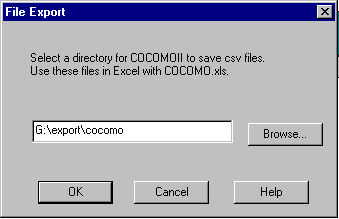
Figure 2-12 File Export Dialog
3. When you click on OK, a dialog box appears if Main.csv and Phases.csv already exist, as shown in Figure 2-13.
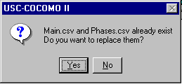
Figure 2-13 Subsequent File Export Dialog Box
4. If Yes is selected, COCOMO saves two files(main.csv and phase.csv) in the chosen directory.
If No is selected, these files will not be replaced.
2.10 Save ScreensThe Save Screens option allows the user to save the image of any Cocomo window.
To Save Screens
1. Choose Save Screens from the File menu.
2. The Save Screens dialog box will appear, as seen in Figure 2-14.
3. Follow the directions on the dialog box.
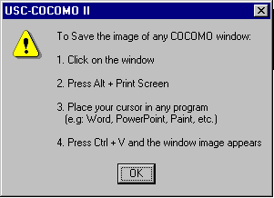
Figure 2-14 Save Screens Dialog Box
The Print Screen option prints the screen of the main Cocomo window.
To Print Screen
1. Choose Print Screen from the File menu.
2. The Print Screen dialog box will appear, as seen in Figure 2-15.
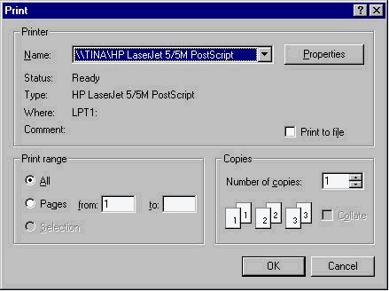
Figure 2-15 Print Screen Dialog Box
3. The Name of the printer can be selected from the dropdown list. Alternatively, you can print to a file by clicking on the Print to file checkbox.
4. Properties of the printer can be set by clicking on the Properties button.
5. The Print range can be All or Pages (e.g. from 1 to 3).
6. The Number of copies can be selected by clicking the up and down arrows, or by typing a number directly.
7. Select OK when finished to print or select Cancel to not print.
The Print Preview option displays that which will appear when printed, if Print Screen is selected from the File menu.
To Preview what is to be printed
1. Choose Print Preview from the File menu.
2. The Print Preview dialog box will appear, as seen in Figure 2-16.
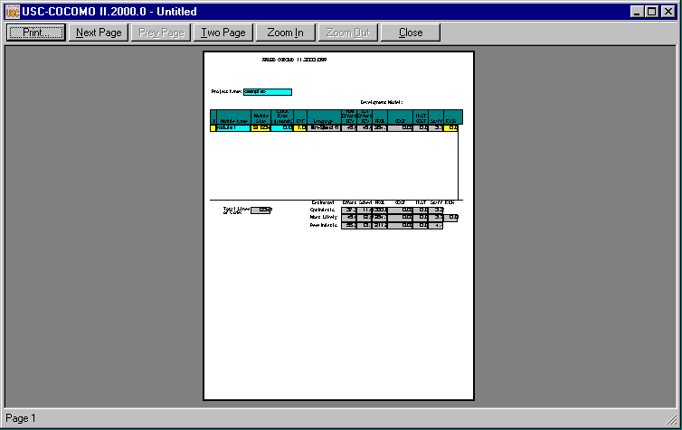
Figure 2-16 Print Preview Dialog Box
The Print Setup option allows the user to set up printing.
To set up Printing
1. Choose Print Setup from the File menu.
2. The Print Setup dialog box will appear, as seen in Figure 2-17.
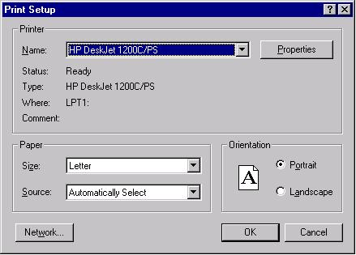
Figure 2-17 Print Setup Dialog Box
3. The Name of the printer can be selected from the dropdown list.
4. Properties of the printer can be set by clicking on the Properties button.
5. The Size and Source of the paper can be selected from the dropdown lists.
6. The Network button can be selected to connect to a printer on a network.
7. Select OK when finished to print or select Cancel to not print.
The Exit option leaves the COCOMO system.
To Exit COCOMO
1. Choose Exit from the File menu with the mouse.
2. This causes your system to terminate the cocomo program.